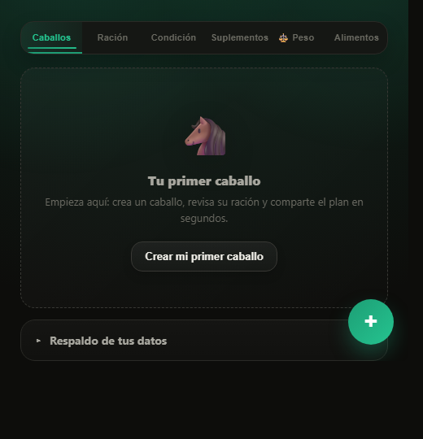
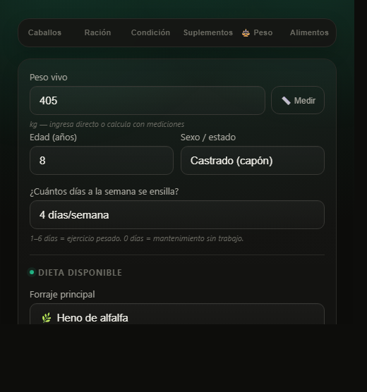
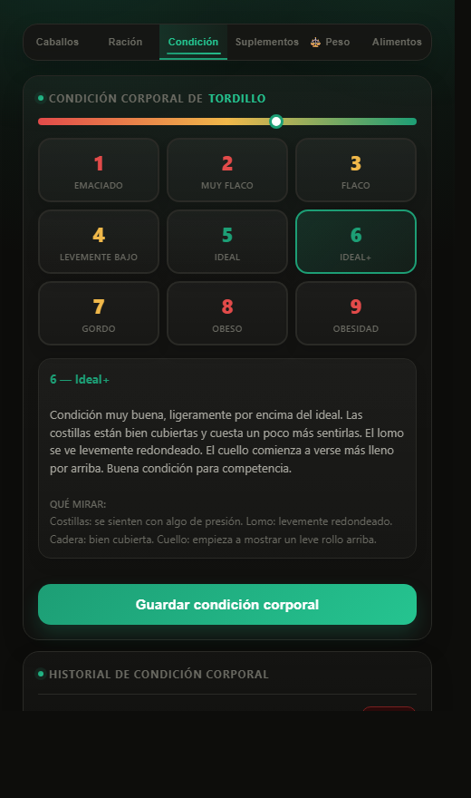
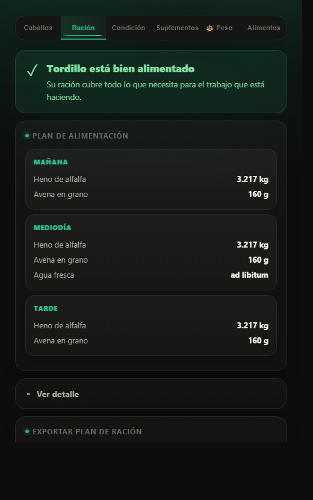
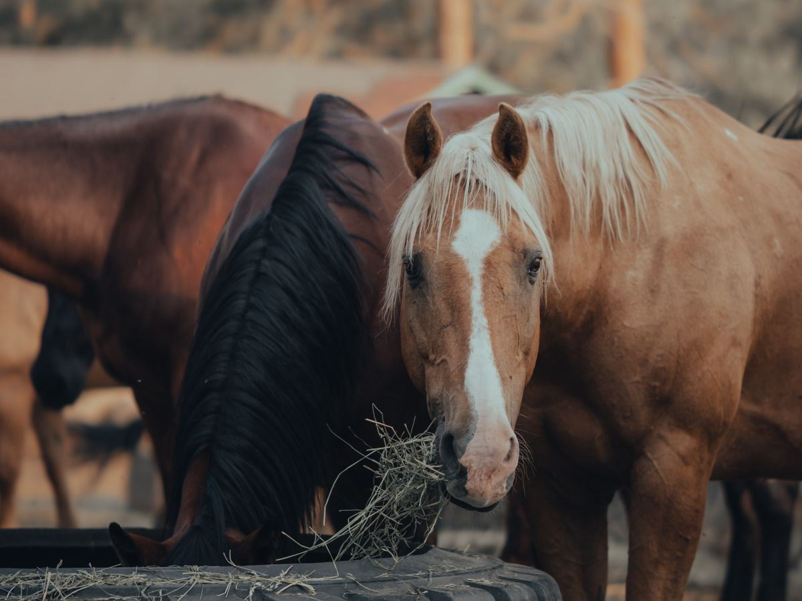

Dinos cuánto pesa tu caballo y cuánto trabaja. La app calcula su ración diaria exacta para su salud y su rendimiento — con base técnica, no a ojo.
Cada paso toma menos de un minuto. Si quieres el detalle de alguno, lo despliegas.

Le pones nombre y, si quieres, una foto.
Esto se hace una sola vez. Cada caballo guarda su propia ficha: su peso, su condición y su ración. Con el plan gratis tienes un caballo; con Premium, todos los que quieras.

El peso, los días que lo ensillas y qué come.
Si no sabes el peso, la calculadora de esta página te lo estima con una huincha y dos medidas. "Cuánto trabaja" es simplemente cuántos días por semana lo ensillas. Y en la dieta eliges el forraje y el concentrado que tienes de verdad en tu campo — si falta alguno, lo agregas tú.

Del 1 al 9: flaco, ideal o pasado de peso.
La app te muestra qué mirar en las costillas, el lomo y la grupa, con una descripción para cada número. Si lo marcas flaco, le sube la ración hasta un 20%; si lo marcas pasado de peso, se la baja y le restringe el concentrado. Es el paso que hace que la ración sea de tu caballo y no de un caballo promedio.

Primero una frase clara, y abajo cada comida con kilos y gramos.
La app parte diciéndote en una línea si tu caballo está bien alimentado o qué hay que corregir. Los números que respaldan esa frase —cuánto cubre la ración, la proteína, el calcio y los minerales— están un toque más abajo, en "Ver detalle": eso es lo que le muestras a tu veterinario o lo que me mandas a mí si quieres una segunda opinión. Todo se exporta en PDF o como imagen para mandárselo por WhatsApp a quien alimenta. Cuando cambie su peso o su condición, actualizas el dato y la ración se recalcula sola.
El pago y la activación ahora son dentro de la app: eliges tu plan, pagas ahí mismo y queda activo al instante. Sin suscripciones que se renuevan solas. Si llevas un criadero, Premium es el que te sirve: caballos ilimitados.
No es una calculadora genérica: junta el peso, el trabajo y la condición corporal de tu caballo para decirte en una frase cómo está y exactamente qué darle hoy — y lo deja listo para compartir con quien alimenta.

La ración deja de ser una herencia y pasa a ser una decisión con fundamento.
La app calcula cuánto heno, concentrado y suplemento necesita tu caballo según su peso, cuánto trabaja y si está preñada o en lactancia. Después mira su condición corporal y ajusta la ración hasta un 20% sola: si está flaco le sube, si está pasado le baja y le restringe el concentrado.
Lo primero que ves al abrir la ración no es una tabla: es una frase — si está bien alimentado o qué hay que corregir, y qué hacer. Los números que la respaldan están ahí mismo, plegados en "Ver detalle": cuánto cubre la ración, la proteína, el calcio y los minerales. Eso es lo que le muestras a tu veterinario.
Y cuando ya está lista, la exportas como PDF o como imagen (PNG) y se la mandas por WhatsApp al petiso o al cuidador. Así todos alimentan igual, aunque tú no estés.
Cuánto heno, concentrado y suplemento darle, dividido en 2, 3 o 4 comidas. Kilos y gramos concretos, no "un poco más o menos".
Abres la ración y lees si está bien alimentado o qué corregir. Los números que lo respaldan quedan un toque más abajo, en "Ver detalle" — para mostrárselos a tu veterinario.
Marcas si está flaco, ideal o pasado de peso (escala 1 a 9) y la ración sube o baja hasta un 20% sola. La nutrición sigue al caballo, no al revés.
Del destete a los 3 años no se calcula por lo que pesa hoy: le dices la edad en meses y cuánto va a pesar de adulto, y te dice cuántos kilos debería subir al mes y si va atrasado.
Exporta la ración completa como PDF o como PNG y compártela por WhatsApp con el cuidador. Nada se da de más ni se olvida.
Registra el peso con dos medidas, guarda el historial con gráfico y te recuerda volver a medir cada 30 días.
Nombre, marca, dosis y horario de cada suplemento anotados en un solo lugar — con recordatorios claros.
Gestiona toda la caballeriza con lista de alimentos editable — agrega los tuyos si no están. Funciona offline una vez instalada.
Sin balanza ni báscula de camión. Con dos medidas y 30 segundos tienes una estimación confiable — la misma fórmula que usan las cintas de peso ("weight tapes") de uso veterinario.
El caballo debe estar parado derecho sobre terreno plano, con las cuatro patas apoyadas parejo y la cabeza relajada — no levantada.
Rodea el tórax con la huincha justo detrás de la cruz y las patas delanteras. Ajustada pero sin apretar, con el caballo respirando normal.
En línea recta, desde la punta del hombro (articulación escápulo-humeral) hasta la punta del anca (isquion).
Información clara y con base técnica sobre cómo alimentar, manejar y cuidar a tu caballo — sin tecnicismos y pensada para el campo y el rodeo.
Rutina diaria, agua, pesebrera o potrero, transporte y descanso — la base de un caballo sano.
Leer guíaForrajes y concentrados: qué aporta cada uno, cómo elegir calidad y cuáles son de riesgo.
Leer guíaCuándo un suplemento suma de verdad y cuándo es solo marketing. Minerales, electrolitos y más.
Leer guíaAcondicionamiento progresivo, nutrición antes y después del rodeo, y descanso para rendir sin lesiones.
Leer guíaVacunas, desparasitación, dientes y primeros auxilios: cuándo actuar y cuándo llamar al veterinario.
Leer guíaAprende a "leer" el cuerpo de tu caballo con la escala 1 a 9 y a saber si está flaco, ideal o pasado.
Leer guíaNutrición de la yegua gestante y en lactancia, el potrillo y el destete — las etapas que más exigen.
Leer guíaSí. Una vez que la instalas, la app sigue disponible aunque no tengas señal — en la hípica, la medialuna o el campo. Tus datos quedan guardados en tu teléfono.
La abres desde el navegador y eliges "Agregar a pantalla de inicio" (o "Instalar app"). Queda como una app normal, con su ícono, sin pasar por tiendas ni pedir permisos extras. Toma menos de un minuto.
Ahora el pago está integrado en la app: entras, eliges el plan mensual o anual, pagas ahí mismo y el Premium queda activo al instante — sin códigos ni esperas. No hay renovación automática: cuando se cumple el plazo, tú decides si sigues. Si tienes cualquier problema con el pago, escríbeme por WhatsApp y lo vemos.
Está pensada y calibrada 100% para el caballo chileno, que es donde más falta hacía. Aun así, los cálculos sirven para cualquier caballo: ingresas su peso, trabajo y condición y la app arma su ración igual.
La ración se arma a partir de cuánto pesa el caballo, cuánto trabaja (días ensillado por semana) y su estado fisiológico (preñez o lactancia). Luego se ajusta según la condición corporal: si está flaco sube la ración hasta un 20%; si está pasado de peso la baja y restringe el concentrado. Todo automático cada vez que actualizas sus datos.
No es una regla inventada: las fórmulas vienen de literatura científica publicada sobre nutrición equina. Cada guía de este sitio lleva al final las referencias que usa, con autor y año, para que puedas revisarlas tú mismo.
No. Es una herramienta para ordenar y fundamentar la alimentación del día a día. Ante enfermedades, dietas especiales o casos complejos, siempre consulta a tu veterinario. Y si quieres que revise la dieta contigo, están los otros servicios.
Tus caballos y sus datos se guardan en tu propio teléfono, no en un servidor. Por eso funciona offline y por eso tu información es tuya.
Escríbeme por WhatsApp y te respondo yo mismo — sobre la app, nutrición o manejo.
Hacer una consultaCrecí entre caballos, en la tradición huasa de mi familia. Trabajando en terreno vi algo que se repite en todos lados: al caballo se le alimenta a ojo. Se copia lo que le funciona al vecino y se compran alimentos más por el marketing de la marca que por lo que aportan.
Cuando busqué respuestas serias me encontré con que sobre el caballo de raza chilena casi no hay estudios — muchas veces se le aplican fórmulas pensadas para otras razas o disciplinas, que pueden estar equivocadas. EquiNutrición nació de ahí.
Poner el conocimiento de nutrición equina en las manos de cualquier propietario o criador —simple de entender, con base técnica y respaldo científico— para que cada decisión sume a la salud y el rendimiento de su caballo.
El caballo chileno es nuestro orgullo y merece el mismo estándar que cualquier caballo de competencia del mundo: que se consideren todos los detalles que afectan su rendimiento y su salud. Para llegar ahí falta información e investigación propia, y eso lo construimos entre todos.
Si llevas registros de tus caballos —pesos, raciones, cómo les fue en la temporada— y quieres que sirvan para entender mejor a nuestra raza, escríbeme. Nada se publica sin tu permiso.
La app es gratis, no pide tarjeta y calcula la ración de tu caballo en cuatro pasos. Si tienes una duda antes de empezar, escríbeme por WhatsApp y te respondo yo mismo.